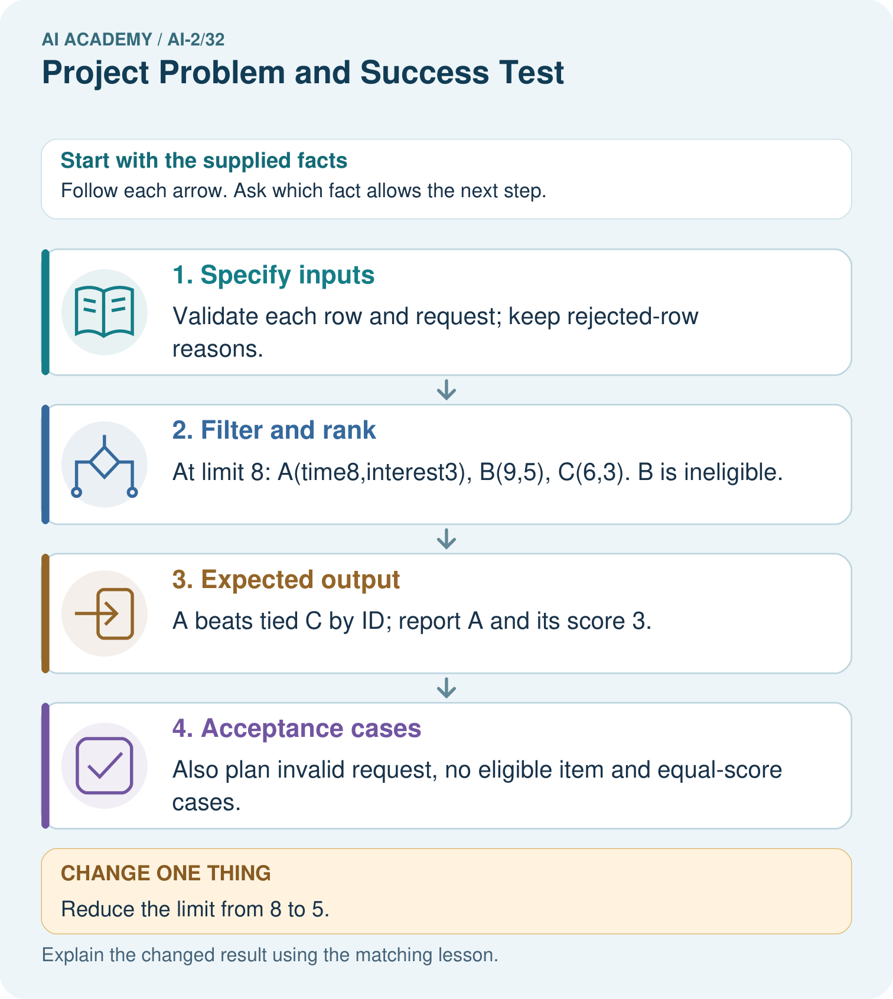
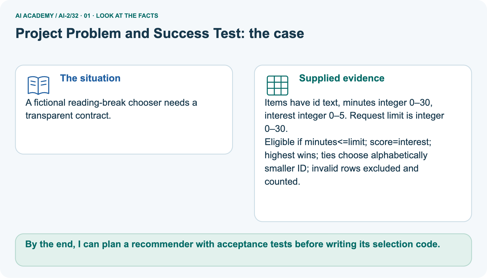
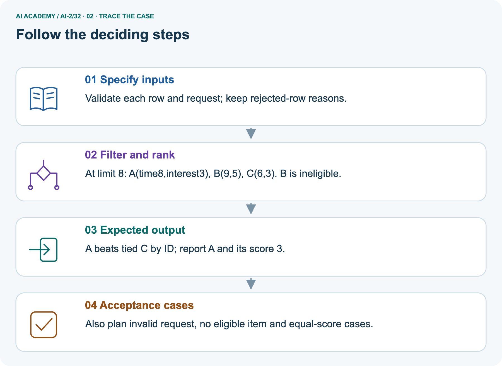
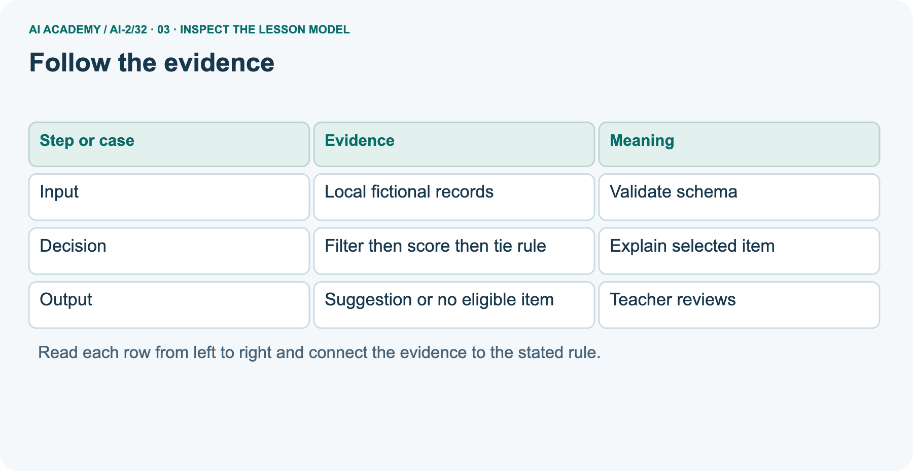
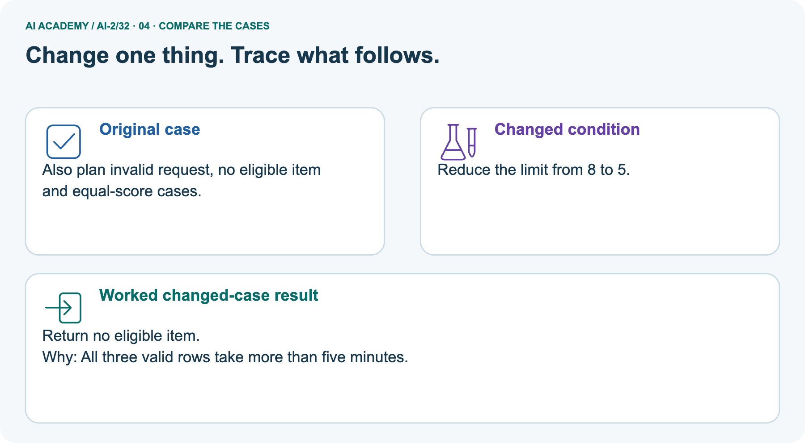
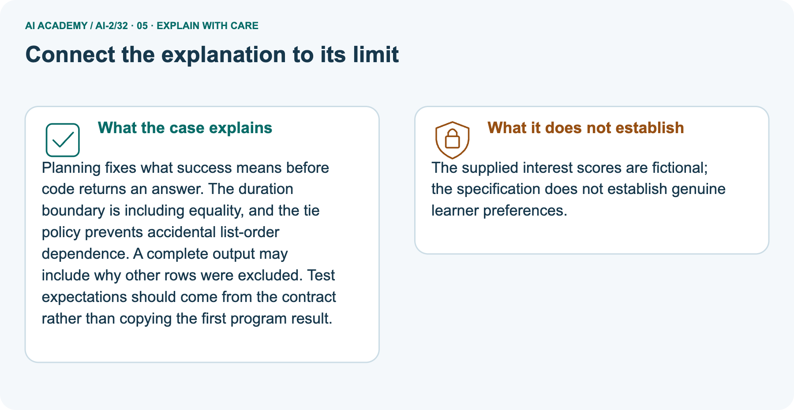
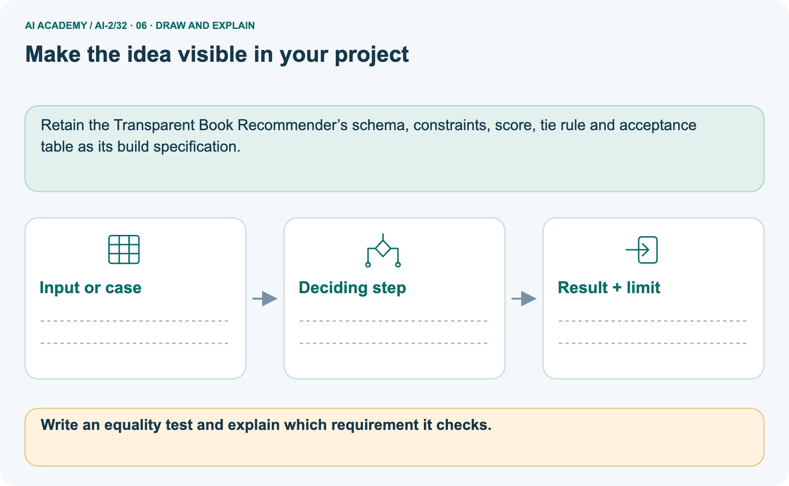

AI Academy · Level 2 · Grade 7 · Week 32 · Teacher guide
Project Problem and Success Test
Learn to understand, design, build, test and explain AI systems responsibly.
Project: Transparent Book Recommender
Teacher guide · 1 of 9
Project Problem and Success Test
Prepare Project Problem and Success Test: check the target, prerequisites, resources and adaptable teaching schedule.
Teach the learning cycle
Primary target: Define a small application purpose
| Session | Sequence and minutes | Resources |
|---|---|---|
| Session 1 · Understand · 45 min | 0–7: recall and prerequisite; 7–15: inspect the concrete case and predict; 15–30: teacher models the worked trace; 30–40: learners explain a step using the text and visual; 40–45: check the core idea. | Use Your mission, Notice the evidence, See how it works, Compare the cases, Words that unlock the idea and Follow a worked example; record the brief recall in the workbook. |
| Session 2 · Practise · 45 min | 0–5: retrieve the procedure; 5–15: W2 completion practice; 15–23: explain and check with a partner; 23–30: each learner answers the misconception check; 30–40: targeted reteaching or a harder variation; 40–45: prepare the investigation. | Use Find and repair a mistake, Practise together, Run the investigation and Build your understanding; use the matching workbook W2 and misconception check. |
| Session 3 · Investigate and transfer · 45 min | 0–5: retrieve the decision rule; 5–20: investigate or trace; 20–30: start the independent case; 30–38: connect the project; 38–43: act on feedback; 43–45: plan the return check. | Use Run the investigation, Connect your project, Show what you know, Study a complete case and Try a new case independently. Allow extra time for the full task set. Use a coding lab only when this week actually provides one; Your lesson route is the planning section. |
This is a starting allocation of 135 minutes, not a validated duration. Preserve all named topics. Schedule extra time for connected examples, the full investigation, independent cases and project building.
Repeated copies of a case share one recorded attempt; they are not new evidence.
Retrieval answer guidance
Permissions and Human Review
Without opening the old lesson, explain one key idea from Permissions and Human Review. Give an example and a mistake that the idea helps you avoid.
Look for: Explain the mechanism and terminology of least privilege and tool scopes
Reference example, not the only acceptable wording: Teacher explanation: Least privilege grants only capabilities required by the task. Tool access should include resource and operation scope, not merely a broad tool name.
A reporting assistant may lookup public rooms but may not write records, send messages or read teacher notes. Check actor, operation and resource before executing a proposed call.
Evidence and Sources
Without opening the old lesson, explain one key idea from Evidence and Sources. Give an example and a mistake that the idea helps you avoid.
Look for: Explain the mechanism and terminology of claim support and citation evaluation
Reference example, not the only acceptable wording: Teacher explanation: Citation evaluation checks source existence, exact passage support and coverage of answer claims. A real citation can still be irrelevant.
For this classroom rubric count a claim as supported only when its cited passage entails it. Separately count correct citation links. Use the number of factual claims as the support denominator.
Image and Voice Pipelines
Without opening the old lesson, explain one key idea from Image and Voice Pipelines. Give an example and a mistake that the idea helps you avoid.
Look for: Explain the mechanism and terminology of speech pipelines and multimodal evidence
Reference example, not the only acceptable wording: Teacher explanation: A multimodal pipeline may transcribe speech, inspect an image and generate a response.
Errors at one stage can propagate even when later stages run correctly. Track source modality, segment/time references, transcription, interpretation and final claims separately.
Compare conflicting evidence without assuming one modality always wins. Ask for clarification when the task needs unresolved information.
Use the student module and workbook section with this exact week title. The worked case, independent question and answers below form one aligned lesson sequence.
What the learner must demonstrate
Specify three acceptance tests for a recommender: a normal match, a tied score and no qualifying book. Include expected behaviour before implementation.
Concept to explain
Week 32: Project Problem and Success Test
| Term | Meaning |
|---|---|
| user need | The problem or desired outcome the system is meant to address for a person. |
| requirement | A behaviour or condition the proposed system must satisfy. |
| acceptance test | A predefined check that a product satisfies a stated requirement. |
| scope | The tasks, users, information and actions included within an agreement or design. |
Prepare the class
Use the supplied scenario, student illustrations and blank paper. For numeric work, offer counters or a calculator after learners show the setup. Fictional records are supplied; personal data and paid accounts are unnecessary.
Alternative compact allocation
This compact option is not the full-week schedule. Use the main teaching cycle and allow extra sessions for the investigation, independent work and project.
Allow 80 minutes: recall 8; explanation 12; worked demonstration 15; guided practice 20; independent assessment 15; project and reflection 10. Extend the lab into a second session when needed.
Preparation for the connected explanation
Teach Week 31 as a two-session investigation using fictional data. Plan a fictional activity chooser for a teacher-supervised 20-minute session.
It will validate a small local dataset, exclude over-limit items, rank eligible items using 2 * fun + learning and break ties alphabetically. It will explain the result for human review.
It will not book, message or collect personal student profiles. Assess the three stated outcomes through the independent task, not by copying the worked result.
Readiness answer
Otherwise it would silently violate the stated requirement.
Python 3 editor with a fresh local practice file
Paper trace table and the student workbook
Fictional input records from this lesson; no real student identifiers
Apply the connected idea: A reproducible data investigation
Teach Week 30 as a two-session investigation using fictional data. Investigate the fictional question: among supplied sessions with valid duration records, what is the mean duration? Inputs are 10, 0, 20, None and -2 minutes.
Our schema accepts exact integers 0 through 60. The wording deliberately limits the answer to accepted records. Assess the three stated outcomes through the independent task, not by copying the worked result.
Readiness answer
Record the rejection and reason; preserve the raw value for authorized review.
Python 3 editor with a fresh local practice file
Paper trace table and the student workbook
Fictional input records from this lesson; no real student identifiers
End goal for the pictorial case
By the end, I can plan a recommender with acceptance tests before writing its selection code.
This added worked case illustrates the week’s main idea. Retain all original and connected topics; schedule its practice within the teaching cycle.
Teacher guide · 2 of 9
Explain the mechanism
Model Project Problem and Success Test using the supplied case, labelled mechanism and reasoning. Make the scope of each conclusion explicit.
Input → Process → Output
Trace the information. At each stage, ask what changed and how you could test it.
Which stage could fail even when the other two are correct? Explain:
Predict first. Then check each step. A correct answer without visible reasoning is incomplete evidence.
1. Need: help a reader choose from 12 classroom books.
2. Requirements: use stated preferences; show score; protect privacy.
3. Tests: correct arithmetic; unsuitable hard constraint removed; explanation names evidence.
4. Out of scope: claiming the objectively ‘best’ book or storing private history.
Recalculate, retrace, or restate the reasoning in your own representation:
CHECK Did the evidence answer the exact question? Did the total, path, or source record stay consistent?
Concrete teaching case
The teaching case
A project recommends from ten approved books using genre and length.
The teaching case
Define acceptance tests.
Exact explanation to model
Why the result follows
Verify book existence, hard constraints, correct scoring explanations, tie handling and no-match behaviour on predefined requests.
Explain the added worked example
Explain the added worked example · 1
Plan a fictional activity chooser for a teacher-supervised 20-minute session. It will validate a small local dataset, exclude over-limit items, rank eligible items using 2 * fun + learning and break ties alphabetically.
It will explain the result for human review. It will not book, message or collect personal student profiles.
Explain the added worked example · 2
Define fields name, minutes, fun and learning. Require a nonempty text name, integer minutes 0 through 60 and integer ratings 0 through 5. Reject duplicate names because the tie rule uses names as identifiers.
Write cases before implementing so requirements do not drift to fit outputs.
Key terms
| Term | Meaning |
|---|---|
| Requirement | A statement of behavior the application must provide |
| Acceptance case | An input and expected behavior used to judge a requirement |
| Non-goal | Something intentionally outside project scope |
| Prototype | A limited implementation for testing a design |
Apply the connected idea: A reproducible data investigation
Investigate the fictional question: among supplied sessions with valid duration records, what is the mean duration? Inputs are 10, 0, 20, None and -2 minutes. Our schema accepts exact integers 0 through 60.
The wording deliberately limits the answer to accepted records.
The result is 3 accepted, 2 rejected, and mean 10.0 minutes. A reproducible report states the question, raw input version, schema, exclusion reasons, calculation and scope.
Someone else should obtain the same result from the same inputs and rules.
Four accepted values total 60, so mean 15 minutes; still two rejected. Exit: Input records/version, schema, excluded rows and reasons, accepted count, calculation and code/configuration version.
Model the reasoning aloud
Use the complete worked example below before asking learners to complete W2. Reveal a small part, invite a prediction, then explain the deciding step.
These teacher notes contain solutions; do not reveal the independent case answer during modelling.
| Thinking move | Teacher prompt |
|---|---|
| Plan | What is given? What is the question? Which procedure fits these facts? |
| Do | Point to each input and intermediate step in the worked trace. Name the rule that allows the next step. |
| Check | Does the output answer the question? Which assumption or limitation prevents a larger claim? |
Use the diagram and verbal explanation together. Ask learners to match a sentence to a specific visual step; do not assign learners fixed visual or auditory learning styles.
A pictorial worked case: Project Problem and Success Test
A fictional reading-break chooser needs a transparent contract.
The facts we will use
Supplied facts
Items have id text, minutes integer 0–30, interest integer 0–5. Request limit is integer 0–30.
Supplied facts
Eligible if minutes<=limit; score=interest; highest wins; ties choose alphabetically smaller ID; invalid rows excluded and counted.

Read the picture one step at a time
Why this result follows
Why the result follows
Planning fixes what success means before code returns an answer. The duration boundary includes equality, and the tie policy prevents accidental list-order dependence.
A complete output may include why other rows were excluded. Test expectations should come from the contract rather than copying the first program result.
What this example does not establish
Keep the stated limit
The supplied interest scores are fictional; the specification does not establish genuine learner preferences.
Change one thing in the pictured case
Change one thing
Change: Reduce the limit from 8 to 5.
Predicted result
Prediction: Return no eligible item.
Why the result follows
Reason: All three valid rows take more than five minutes.
Ask while showing the picture
Ask while showing the picture · 3
Cover the result. Ask learners to name the inputs and predict the next step. Uncover one step, connect the icon to the actual procedure, and explain its evidence. Then change the supplied condition and compare.
The picture is a representation; it does not document execution of a real AI model.
Teacher guide · 3 of 9
Demonstrate and guide practice
Demonstrate Project Problem and Success Test, reduce support deliberately and check individual reasoning before discussing answers.
Board sequence
1. Put the facts on the board
Write the given facts: A project recommends from ten approved books using genre and length.
2. State the decision to explain
Write the question to explain: Define acceptance tests.
3. Reveal the worked reasoning
Reveal after predictions: Verify book existence, hard constraints, correct scoring explanations, tie handling and no-match behaviour on predefined requests.
Hold back the independent task
Keep for an independent attempt: Define a testable goal for a book recommender serving readers who want short space books. Include a concrete success condition.
Classroom dialogue
Ask the class
Ask: Which facts are given, and which would we have to assume? Learners mark relevant details before discussing answers.
Language to model
Say: Predict first. Show the rule, information path or calculation that would produce the result. A correct guess is not yet an explanation.
Reveal reasoning one step at a time. Explain why a tempting alternative fails. Write units and denominators for arithmetic, trace conditions for decisions, and identify supporting sources for claims.
In pairs, one learner solves while the other checks evidence; exchange roles. Remove the worked answer before independent assessment.
Model these guided questions
An otherwise valid 20-minute item qualifies; a 21-minute-only dataset yields no eligible option under limit 20. Exit: Examples: real student profiling, automatic booking or claims of proven learning benefit.
They need separate evidence, permissions and scope.
Case-specific teaching sequence
| Stage | Teacher action |
|---|---|
| Session 1 start to 7 minutes | Retrieve the prerequisite and explain the purpose in the opening section. |
| 7 to 20 minutes | Read the worked example and diagram; ask learners to trace each step aloud. |
| 20 to 33 minutes | Complete W1 and W2, then compare predictions with observed results. |
| 33 to 45 minutes | Collect the guided prediction before running; discuss a mismatch and its cause. |
| Session 2 start to 8 minutes | Retrieve the main rule without showing the previous answer. |
| 8 to 20 minutes | Use W3 to diagnose and repair the stated failure; rerun an earlier case. |
| 20 to 35 minutes | Collect W4 independently, including code or plan, predictions and explanations, before hints. |
| 35 to 45 minutes | Discuss W5 and the exit; use the fresh retry when support was needed. |
Teach the connected idea
| Stage | Teacher action |
|---|---|
| Session 1 start to 7 minutes | Retrieve the prerequisite and explain the purpose in the opening section. |
| 7 to 20 minutes | Read the worked example and diagram; ask learners to trace each step aloud. |
| 20 to 33 minutes | Complete W1 and W2, then compare predictions with observed results. |
| 33 to 45 minutes | Collect the guided prediction before running; discuss a mismatch and its cause. |
| Session 2 start to 8 minutes | Retrieve the main rule without showing the previous answer. |
| 8 to 20 minutes | Use W3 to diagnose and repair the stated failure; rerun an earlier case. |
| 20 to 35 minutes | Collect W4 independently, including code or plan, predictions and explanations, before hints. |
| 35 to 45 minutes | Discuss W5 and the exit; use the fresh retry when support was needed. |
Reduce help deliberately
Completion practice
Completion task: Give a tie case for A and B with score 8 each and valid durations.
Reasoning to listen for
Teacher check: With both eligible, choose A alphabetically regardless of input order.
Start by identifying the given inputs together. Leave the intermediate steps blank. If needed, model one step, then withdraw that help on the next step. Move to a full trace only when the partial trace is understood.
For partners, alternate explainer and checker; collect a response from every learner before discussion.
Individual reasoning check
Use the worked case for Planning the application. Proposed explanation: “A successful run proves the conclusion”. Decide whether this explanation is supported.
Point to the step or supplied fact that decides; explain your repair if needed.
Expected repair
Expected correction: The scope is a rule-based prototype using fictional ratings. It does not demonstrate personalized learning impact or a trained AI model.
A clear non-goal protects students from building an untestable or overly broad project.
Collect explanations, not only yes/no votes. If a misunderstanding is common, re-model the relevant step for the class.
If it affects a few learners, give a short targeted group explanation while others solve a more demanding variation.
Connected teaching cycle: A reproducible data investigation
Target: Write a reproducible data question
Reserve further sessions for this topic; the 135-minute primary plan does not absorb all added content.
Completion practice: Classify 0, None, -2 and 60 under the schema.
Reasoning to listen for
Teacher check: 0 and 60 accepted; None missing/unknown and -2 out of range are rejected.
Individual check: For A reproducible data investigation, use its worked case to evaluate this proposed explanation: “A successful run proves the conclusion”. Explain the deciding step.
Expected repair
Expected correction: Missing or invalid durations might belong to unusually long sessions. The accepted mean may therefore differ from the full group's mean. Do not make a causal claim from this descriptive investigation.
Apply the same support, independent transfer and delayed-review decisions to the named connected-topic workbook tasks.
Pictorial practice question
Write an equality test and explain which requirement it checks.
Reasoned teacher answer
Limit 8 with A taking 8 must include A; it checks that time eligibility uses <= rather than <.
Changed-case reasoning: Return no eligible item. All three valid rows take more than five minutes.
Collect each learner’s explanation before discussion. Use the first missing connection between input, deciding step and result to choose support. This question is worked-case practice, not fresh mastery evidence.
Teacher guide · 4 of 9
Run the weekly evidence lab
Run the Project Problem and Success Test investigation and use the first unsupported step to choose a teaching response.
Words You Can Use to Reason
A definition matters when you can recognize the idea, use it, and contrast it with a near-miss.
Predict → Test → Record → Explain
Keep expected and actual results separate. Surprises are useful data when recorded honestly.
Interview a reader, write one need statement, define three measurable tests and two out-of-scope items, then peer-review for testability.
What did the hardest test teach you that the normal test did not?
Make the lab runnable
Use the concrete case as the shared normal case and the independent question as a second case. Each pair creates a boundary or missing-information case and predicts its result before testing.
Keep the expected result separate from an observed mistake.
| Record | What to capture |
|---|---|
| Input or evidence | Exact data, instruction or claim |
| Expected result | Answer or safe fallback declared before the run |
| Observed result | Actual result, including errors |
| Explanation | Rule, calculation or evidence explaining the outcome |
| Next test | One justified change and a new prediction |
Diagnose and reteach
For guessing, return to given facts and request a trace. For vocabulary without application, use one example and one non-example. For arithmetic errors, check the setup before the calculation.
Finish with a different uncoached case before recording mastery.
Address these additional misconceptions
A successful run proves the conclusion: The scope is a rule-based prototype using fictional ratings. It does not demonstrate personalized learning impact or a trained AI model.
A clear non-goal protects students from building an untestable or overly broad project.
Matching the example is enough: Require the new W4 case, explicit predictions and an explanation. Fresh retry: plan a 10-minute chooser with boundary 10/11, duplicate-name rejection and an empty-input case.
Collect the plan before implementation.
A convenient shortcut preserves meaning: A requirement such as make a smart choice cannot be tested precisely. Replace it with a stated score, limit, tie rule and output explanation.
If real feedback later changes the policy, record a versioned change rather than rewriting previous evidence.
Check these misconceptions
A successful run proves the conclusion: Missing or invalid durations might belong to unusually long sessions. The accepted mean may therefore differ from the full group's mean.
Do not make a causal claim from this descriptive investigation.
Matching the example is enough: Require the new W4 case, explicit predictions and an explanation. Fresh retry: [5, None, 15, -1, 10] gives accepted [5,15,10], 2 rejected and mean 10, with coverage 3 of 5.
A convenient shortcut preserves meaning: Dividing the accepted total 30 by all five records gives 6 and answers no clear observed-duration question.
Use the accepted count for this mean, disclose exclusions, and never describe it as the average for every supplied session.
Match the support to the first error
| What the response shows | Next teaching action |
|---|---|
| Missing or misread facts | Read the case aloud, mark supplied versus unknown facts, and let the learner restate it. |
| Wrong procedure | Return to the deciding step in the worked case. Contrast it with the proposed incorrect explanation. |
| Arithmetic or implementation error | Trace intermediate values or lines; preserve the first mismatch and retry that step. |
| Correct result without a reason | Ask for a trace and a changed case before marking independent understanding. |
| An unsupported wider claim | Ask which supplied evidence supports the claim and which further observation would be needed. |
Offer an oral explanation, drawing, enlarged visual or fewer examples when that removes a reading/writing barrier. Keep the same reasoning goal.
Stretch secure learners by changing a boundary or assumption and asking them to defend the effect, not simply by assigning more of the same questions.
Teacher guide · 5 of 9
Assess and explain the answers
Use the Project Problem and Success Test questions, teacher keys and criteria after the relevant attempts. Previously discussed cases are practice; protect the separately selected independent task.
Worked case answer
Teacher key · Worked case answer
Verify book existence, hard constraints, correct scoring explanations, tie handling and no-match behaviour on predefined requests.
Independent question
Independent question · withhold the key
Define a testable goal for a book recommender serving readers who want short space books. Include a concrete success condition.
Expected independent answer
Teacher key · Expected independent answer
On supplied test preferences, recommend a space book within the stated page limit and explain the matching fields. Include a no-match fallback. Other clear measurable criteria are valid.
What counts as evidence
| Criterion | 0 points | 1 point | 2 points |
|---|---|---|---|
| Result | Incorrect or absent | Partly correct | Correct with necessary conditions |
| Reasoning | No supporting trace | Some steps | Clear mechanism, calculation or source support |
| Limit | Overclaims certainty | Vague limitation | Relevant uncertainty or missing fact |
| Transfer | Copies without adapting | Adapts with prompts | Solves a changed case independently |
Use 6/8 as a classroom checkpoint, with 2 required for both Result and Reasoning. This is a proposed teaching rule, not a validated certification threshold.
Do not count a coached answer as independent mastery; correct unsafe or unsupported claims regardless of total.
Feedback
Ask the learner to find the evidence that challenges this claim: “Make it smart is a measurable success test.” Keep the first attempt and an uncoached retry separate.
Original transfer answer
Teacher key · Original transfer answer
For a normal request, return an existing eligible highest-scoring book with traceable score; for a tie, apply the declared tie policy; for no match, state none found without inventing a title.
Exact fictional catalogue rows and requests must accompany each test.
Explanations for the additional workbook examples
W1 Name the user need
Workbook question · W1
State the purpose and decision owner of the worked chooser.
Teacher reasoning · W1
Suggest a suitable eligible activity for a teacher-supervised session; the teacher reviews and decides.
W2 Write an acceptance case
Workbook question · W2
Give a tie case for A and B with score 8 each and valid durations.
Teacher reasoning · W2
With both eligible, choose A alphabetically regardless of input order.
Teacher reasoning · W2
Choose two individually valid records with unique names A and B, scores 8 each and durations within the limit. Both survive validation and filtering, then tie on score. The name rule selects A in either order.
Require actual record fields so the proposed test can be reproduced, rather than accepting an unexplained winner name.
W3 Repair vague scope
Workbook question · W3
Replace the requirement always choose the best activity with a checkable one.
Teacher reasoning · W3
Choose the highest 2 * fun + learning score among valid items within the limit, using alphabetical ties; return no eligible option if none qualify.
W4 Plan independently
Workbook question · W4
Plan a 15-minute fictional club chooser. Specify schema, score, duration limit, tie rule, invalid-data behavior, output and three acceptance cases.
Teacher reasoning · W4
Retain the stated schema and scoring or justify an explicit alternative. Require boundary 15/16, tie/order and no-match cases with expected results, rejection reasons and human review.
W5 State non-goals
Workbook question · W5
Name two capabilities excluded from this prototype and explain why.
Teacher reasoning · W5
Examples: real student profiling, automatic booking or claims of proven learning benefit. They need separate evidence, permissions and scope.
A reproducible data investigation — W1 State the question
Write the worked investigation question so its population of records is clear.
What is the mean duration among supplied sessions with valid integer minutes from 0 through 60?
A reproducible data investigation — W2 Trace exclusions
Classify 0, None, -2 and 60 under the schema.
0 and 60 accepted; None missing/unknown and -2 out of range are rejected.
A reproducible data investigation — W3 Repair a denominator
A report divides a valid total of 24 by six supplied rows, though only three are valid. Correct the valid-record mean.
24/3 = 8. Report 3 accepted and 3 rejected; do not use all six as the valid-record denominator.
A reproducible data investigation — W4 Investigate independently
Analyze raw durations [6, 12, None, 0, 70, 18] with the same schema. Report question, accepted list, rejections, mean and one limitation.
Accepted [6, 12, 0, 18], 2 rejected, total 36, mean 9. State 4 of 6 accepted; missing/invalid records may differ. Preserve the raw list and rules.
A reproducible data investigation — W5 Support reproduction
A report gives only mean 9. What additional evidence lets a peer reproduce it?
Input records/version, schema, excluded rows and reasons, accepted count, calculation and code/configuration version.
Assess independent transfer
Independent question · withhold the key
Selected case: Plan a 15-minute fictional club chooser. Specify schema, score, duration limit, tie rule, invalid-data behavior, output and three acceptance cases.
Selected case answer
Teacher key · Selected case answer
Retain the stated schema and scoring or justify an explicit alternative. Require boundary 15/16, tie/order and no-match cases with expected results, rejection reasons and human review.
| Dimension | Evidence required |
|---|---|
| Explanation | Names the applicable idea or procedure and ties it to the supplied facts. |
| Trace and result | Preserves the given inputs and shows the relevant intermediate steps; distinguishes a prediction from an observed execution. |
| Limits | States the assumptions, missing evidence or conditions under which the result would change. |
Teacher key · Selected case answer
Record each dimension as not yet, with support, or independent. Accept a valid alternative procedure with a defensible trace.
Do not penalise an honestly recorded model failure if the learner correctly explains its evidence and limits.
Feedback that the learner uses
Name the earliest unsupported step and give one action to repair it. Have the learner make that repair now and explain why. Then assess the relevant skill on a fresh, fully specified case.
Confirm it was not previously practised with feedback; solve and check the new case before assigning it. A follow-up design prompt is a starting brief, not automatically an equivalent test.
Teacher guide · 6 of 9
Connect and extend learning
Connect Project Problem and Success Test to Transparent Book Recommender, adapt support and plan a later changed-case check.
Transparent Book Recommender
Freeze the brief before building so later choices can be traced to requirements.
Keep the decision, input, result, explanation and remaining limitation in the project evidence record. Retrieve this record next week rather than restarting the project.
Support and stretch
Trace one record or condition at a time with counters and labelled columns. Stretch: introduce a tie, boundary or missing field and declare its handling policy before rerunning.
Exit reflection
Ask for one decision the learner can now justify and one situation requiring more evidence or human review. Confidence ratings are separate from correct independent performance.
Bridge to the next week
Next: Week 33: Build the Recommender. Retrieve today’s evidence and identify what carries forward and what is new.
Support and fresh reassessment
Use a one-page requirements card. Extension: trace each requirement to a specific acceptance case and identify uncovered requirements.
Independent W4 evidence: Retain the stated schema and scoring or justify an explicit alternative. Require boundary 15/16, tie/order and no-match cases with expected results, rejection reasons and human review.
Record whether the learner needed no help, a hint or explanation. Fresh retry: plan a 10-minute chooser with boundary 10/11, duplicate-name rejection and an empty-input case. Collect the plan before implementation.
Next week: Building the data pipeline. Reuse this week's explicit contracts and evidence.
Readiness and reassessment for A reproducible data investigation
Provide an investigation checklist with blank evidence fields. Extension: compare median and mean of accepted values and explain what each hides.
Independent W4 evidence: Accepted [6, 12, 0, 18], 2 rejected, total 36, mean 9. State 4 of 6 accepted; missing/invalid records may differ. Preserve the raw list and rules.
Record whether the learner needed no help, a hint or explanation. Fresh retry: [5, None, 15, -1, 10] gives accepted [5,15,10], 2 rejected and mean 10, with coverage 3 of 5.
Plan the delayed return
Suggested return points in this level: ai-2/33, ai-2/35. Use actual classroom dates, adjusting for holidays and gaps. One, three and six teaching weeks are scheduling choices, not a claimed optimal spacing.
At a delayed check, ask for the idea from memory and a changed application. Compare with the earlier independent response and record support used.
For a new level, revisit the previous capstone before checking the new prerequisites.
| Record | Teacher evidence |
|---|---|
| Learner code and date | |
| Concept and case used; prior exposure | |
| Explanation / trace / limits | |
| Support and first repair | |
| Changed case and delayed outcome | |
| Next teaching action |
Use the evidence to choose reteaching or the next step. A completed page, confidence rating or attractive project does not by itself demonstrate understanding.
Project evidence from this case
Retain the Transparent Book Recommender’s schema, constraints, score, tie rule and acceptance table as its build specification.
Teacher guide · 7 of 9
Prepare, teach and assess
Use this preparation summary alongside the detailed Project Problem and Success Test lesson; it is a checklist rather than a replacement for the full sequence.
Teaching target
Teaching target: Define a small application purpose
Prepare the labelled worked-case picture, the matching workbook, fictional input cards and a place for individual responses. No paid AI account is required for the paper reasoning activities.
| Session | Plan | Resources |
|---|---|---|
| Session 1 · Understand · 45 min | 0–7: recall and prerequisite; 7–15: inspect the concrete case and predict; 15–30: teacher models the worked trace; 30–40: learners explain a step using the text and visual; 40–45: check the core idea. | Use Your mission, Notice the evidence, See how it works, Compare the cases, Words that unlock the idea and Follow a worked example; record the brief recall in the workbook. |
| Session 2 · Practise · 45 min | 0–5: retrieve the procedure; 5–15: W2 completion practice; 15–23: explain and check with a partner; 23–30: each learner answers the misconception check; 30–40: targeted reteaching or a harder variation; 40–45: prepare the investigation. | Use Find and repair a mistake, Practise together, Run the investigation and Build your understanding; use the matching workbook W2 and misconception check. |
| Session 3 · Investigate and transfer · 45 min | 0–5: retrieve the decision rule; 5–20: investigate or trace; 20–30: start the independent case; 30–38: connect the project; 38–43: act on feedback; 43–45: plan the return check. | Use Run the investigation, Connect your project, Show what you know, Study a complete case and Try a new case independently. Allow extra time for the full task set. Use a coding lab only when this week actually provides one; Your lesson route is the planning section. |
Before class, solve the supported practice: Give a tie case for A and B with score 8 each and valid durations.
Supported practice answer
Reasoned practice answer: With both eligible, choose A alphabetically regardless of input order.
Check every learner before discussion: Use the worked case for Planning the application. Proposed explanation: “A successful run proves the conclusion”. Decide whether this explanation is supported.
Point to the step or supplied fact that decides; explain your repair if needed.
Repair the misconception
Misconception repair: The scope is a rule-based prototype using fictional ratings. It does not demonstrate personalized learning impact or a trained AI model.
A clear non-goal protects students from building an untestable or overly broad project.
Support without giving away the answer
Support: read the exact case aloud, enlarge the labelled picture, supply input cards and model only the first deciding step. Accept a spoken explanation or drawing; retain the reasoning goal.
Extend the reasoning
Extension: Reduce the limit from 8 to 5. Require a prediction and a reason before comparing. Expected result: Return no eligible item. Reason: All three valid rows take more than five minutes.
Protect the independent attempt
Independent assessment: withhold the reserved answer until the learner has attempted the new case. Record support separately from correctness.
| Criterion | Not yet | With support | Independent |
|---|---|---|---|
| Explanation | Names an answer without a deciding fact | Uses a hint to link fact and decision | Explains the deciding fact in own words |
| Trace or test | Cannot connect input and result | Completes steps with prompts | Traces or tests a changed case accurately |
| Limits and revision | Claims more than evidence supports | Names a limit after a prompt | States a defensible limit and useful next test |
Project checkpoint
Project checkpoint: Present and defend. Demonstrate the system, explain one failure and justify the next improvement with evidence.
Use the weekly teacher answer for topic-specific reasoning. A saved progress tick is an activity record; judge mastery from the learner’s explanation and evidence.
Teacher guide · 8 of 9
Use feedback, labs and repair paths
Use feedback, earlier review and portfolios purposefully. Apply the coding routine only when this lesson has an executable lab.
Use the two formative questions as supported practice, not as independent mastery scores. Discuss the deciding evidence rather than accepting a guessed selection.
The feedback comes from the reviewed public worked case. Do not reveal the separately reserved independent teacher answer until the learner has attempted that case.
Ask students to predict before running code. Preserve errors and actual outputs; collect a changed test and an explanation. The branch-boundary and indexing lessons deliberately include failure cases.
Use the earlier worked-explanation links to address a specific missing building block, then return to the current question. Adapt this suggestion after observing the learner; it is not an automatic diagnosis.
Collect the completed-work portfolio as evidence. Record support separately from correctness, and assess explanation, trace/test and limitations. Progress ticks and quiz selections alone do not establish mastery.
Teacher guide · 9 of 9
Visual concept journey
Show one Project Problem and Success Test graphic at a time, request a prediction and discuss its trace before the independent assessment.
Use one picture at a time. Hide a worked result before asking for a prediction, then reveal it for feedback. These are supported teaching cases; retain the separate independent assessment for a fresh first attempt.
01. Project Problem and Success Test: the case

A fictional reading-break chooser needs a transparent contract. Supplied facts: Items have id text, minutes integer 0–30, interest integer 0–5. Request limit is integer 0–30.
Eligible if minutes<=limit; score=interest; highest wins; ties choose alphabetically smaller ID; invalid rows excluded and counted.
Point to the given fact that matters most. Explain why it matters.
Discuss while showing the picture
Teacher prompt: Point to the given fact that matters most. Explain why it matters. Ask learners to describe one label or arrow in ordinary words. Use the adjacent transcript if the image is difficult to see.
02. Follow the deciding steps

Specify inputs: Validate each row and request; keep rejected-row reasons. → Filter and rank: At limit 8: A(time8,interest3), B(9,5), C(6,3).
B is ineligible. → Expected output: A beats tied C by ID; report A and its score 3. → Acceptance cases: Also plan invalid request, no eligible item and equal-score cases.
Point to each numbered stage and explain which recorded input it uses.
Discuss while showing the picture
Teacher prompt: Point to each numbered stage and explain which recorded input it uses. Ask learners to describe one label or arrow in ordinary words. Use the adjacent transcript if the image is difficult to see.
03. Follow the evidence

Follow the evidence. Input | Local fictional records | Validate schema. Decision | Filter then score then tie rule | Explain selected item. Output | Suggestion or no eligible item | Teacher reviews
Read the labels and values. Explain the relationship the model shows.
Discuss while showing the picture
Teacher prompt: Read the labels and values. Explain the relationship the model shows. Ask learners to describe one label or arrow in ordinary words. Use the adjacent transcript if the image is difficult to see.
04. Change one thing. Trace what follows.

Original case: Also plan invalid request, no eligible item and equal-score cases. Changed condition: Reduce the limit from 8 to 5. Expected result: Return no eligible item.
Reason: All three valid rows take more than five minutes.
Predict before checking the worked changed-case result. Name what changed and what the supplied facts allow you to conclude.
Discuss while showing the picture
Teacher prompt: Predict before checking the worked changed-case result. Name what changed and what the supplied facts allow you to conclude. Ask learners to describe one label or arrow in ordinary words.
Use the adjacent transcript if the image is difficult to see. Changed-case reasoning: All three valid rows take more than five minutes.
05. Connect the explanation to its limit

Planning fixes what success means before code returns an answer. The duration boundary includes equality, and the tie policy prevents accidental list-order dependence.
A complete output may include why other rows were excluded. Test expectations should come from the contract rather than copying the first program result.
Limit: The supplied interest scores are fictional; the specification does not establish genuine learner preferences.
Explain the case, then point to a limit on the claim.
Discuss while showing the picture
Teacher prompt: Explain the case, then point to a limit on the claim. Ask learners to describe one label or arrow in ordinary words. Use the adjacent transcript if the image is difficult to see.
Keep the stated scope: The supplied interest scores are fictional; the specification does not establish genuine learner preferences.
06. Make the idea visible in your project

Retain the Transparent Book Recommender’s schema, constraints, score, tie rule and acceptance table as its build specification. Draw your input, deciding step, result and limit.
Supported question: Write an equality test and explain which requirement it checks.
Draw your project trace and justify the deciding step using evidence.
Discuss while showing the picture
Teacher prompt: Draw your project trace and justify the deciding step using evidence. Ask learners to describe one label or arrow in ordinary words. Use the adjacent transcript if the image is difficult to see.
Supported practice key: Limit 8 with A taking 8 must include A; it checks that time eligibility uses <= rather than <.